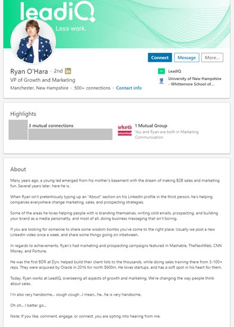
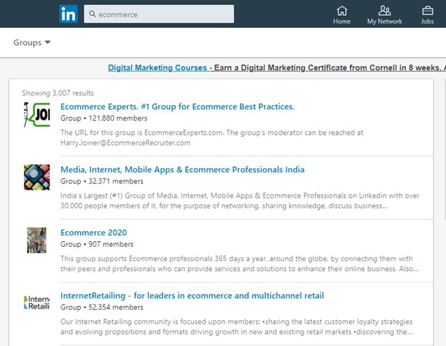
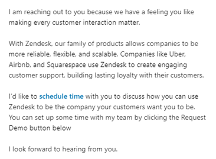
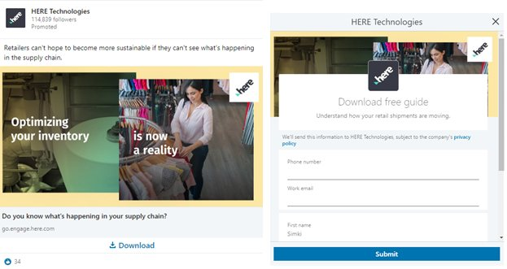
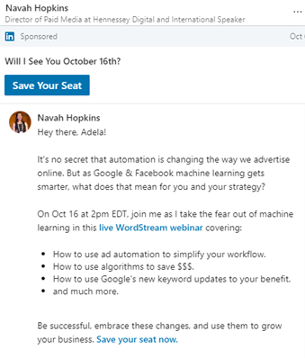
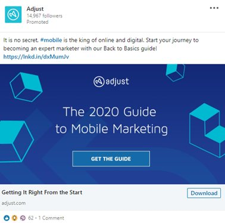
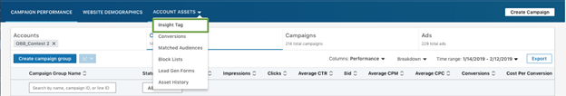

One of the biggest misconceptions surrounding LinkedIn is that it is only meant of job seekers and recruiters. If you are under the same impression, you’re missing out a wide source of potential leads.
You’ll be surprised to know that 80% of B2B leads come from LinkedIn.
This social media platform is considered to be an effective lead generation channel because it’s frequently used by professionals and decision-makers, with 45% of users being part of senior-level positions.
So, for a business looking to attract leads, LinkedIn can prove to be an extremely powerful and cost-effective channel to reach the right prospects and engage with them.
Here’s how you can use LinkedIn to generate high-quality leads and grow your business.
Optimize your LinkedIn profile
The first step is polishing your profile while optimizing it for lead generation and relationship building. After all, it’s the first thing people see, and you need it to deliver a positive impression.
Follow these 7 tips to create a winning profile that piques interest in your prospects –
- Use a professional headshot against a plain background
- Create a valuable headline that includes industry-specific keywords
- Fill in your contact details and website URL to make it easy to contact you
- Write a crisp and compelling summary that captures people’s attention
- Elaborate on each of your experiences in detail
- Use visuals, slideshows, PDFs or videos to showcase your work
- Ensure you have enough recommendations from your clients
Your LinkedIn profile should give prospects a reason to connect and engage with you. Leverage this space to sell yourself before you sell your company’s products or services.
Here’s a good example of a well-written LinkedIn profile that outlines his expertise while giving people an insight into his personality. This intrigues readers and makes them want to learn more about him and his company.

Be Active
It’s not enough to create a profile and expect to yield results.
From commenting and engaging with your connections’ posts to posting content regularly – it’s extremely important to be active and consistent. This will help you solidify your brand presence and build credibility, helping you connect with your target audience with ease.
One of the most effective ways to remember to be active on LinkedIn is to download the mobile app and set aside 15-30 minutes every day to just post and engage with people on the platform. Set a reminder on your phone so you’re able to make this is a daily practice.
Join and participate in LinkedIn groups
LinkedIn groups are a great place to meet like-minded people and connect with them.
Find 3-4 relevant groups that are related to your niche and are frequented by your target audience. Join those groups and make it a point to actively participate in them.
Apart from posting content, you should also focus on answering questions and offer solutions (organically). However, don’t make the mistake of being overly promotional and spam the group.
The idea is to project yourself as an expert, so people are able to take note of you (and your business) and instill trust in you.
All you have to do is insert the keywords related to your business/industry and filter by ‘Groups’.

Connect with potential leads
While you have your list of target companies and you can manually look for them, the smarter way to conduct your search and find new audiences is to leverage LinkedIn’s Advanced Search feature.
This useful feature lets you find the exact type of people you’re looking for. You can filter as per location, industry, title, connections and groups.
Let’s say you are part of an HR software company and want to reach out to the HR heads of small and mid-sized businesses. You insert the filters and narrow down on the best potential leads who you can write to.
This saves time while enabling you to target specific people and strike conversations with those who have the power to take decisions.
Engage with personalized outreach
You send a connection request to a prospect. They accept it. The next thing you do is send them a message pushing your product.
No response.
That’s not surprising because why would a stranger (who knows nothing about you or your company) be compelled to reply to a salesy message.
LinkedIn InMail’s response rate is three times higher than a regular email and sending promotional messages are just a waste of this opportunity.
You need to play it tactfully.
You first outreach message needs to be crisp. Start with introducing yourself, tailor the message to the prospect (you can complement them on their work, find a common ground or even mention an article they recently posted) and give them a reason to reply by asking a question.
If you’re trying to highlight your product/service, make sure you focus on how it’s going to help them. The value proposition needs to be strong enough for them to consider your message and respond.
Take a look at this outreach message. It provides value, offers social proof and ends with a clear call-to-action.

Leverage LinkedIn’s paid tools
Apart from organically securing leads on LinkedIn, this platform also offers a range of advertising products that will help you focus your targeting and reach the right leads.
Here are the key ad formats you can leverage to run lead generating campaigns –
- Lead Gen Forms
This format lets you collect vital lead information without leaving LinkedIn.
The user clicks on the lead gen form ad and is shown the lead form which comes with pre-filled details (picked from their profile). All they have to do is confirm the details. This boosts your lead generation efforts and also makes it easy for your prospects to share information.

- Sponsored InMail
Through Sponsored InMail, you get to send a direct message to the prospect, letting you engage with them on a personal level.
This message appears at the top of their inbox, so you don’t have to worry about getting lost in heap of messages.

- Sponsored Content
Sponsored Content ads appear as native ads on the feed. You can create these ads as a single image, carousel with multiple images or video.
Make sure you use an enticing caption and visual that is focused on driving value. Once the user clicks on the ad, they are directed to a landing page.

Add the Insight Tag on your website
Another smart tactic to connect and engage with prospects is to add the LinkedIn Insight Tag on your website.

Insight Tag is a code snippet which when installed lets you track website visitors. You can access this data by clicking ‘Website Demographics’ and derive valuable insights such as the job title, industry, job function, company, company size and location.
This will give you clearer picture on the kind of companies taking interest in your website so you can tailor your communication to meet their needs and also improve your advertising efforts.
While this is a free-to-use feature, you need to have an ads account on LinkedIn to utilize it.
So, if lead generation is a key business objective for your company, you must leverage LinkedIn strategically. Not only does it let you connect with your target audience and strike fruitful conversations with them, but its accurate targeting features also helps you run focused lead generation campaigns to reach the right prospects.
About the author
Adela Belin is a content marketer and blogger at Writers Per Hour. She is passionate about sharing stories with the hope to make a difference in people’s lives and contribute to their personal and professional growth. Find her on Twitter and LinkedIn.
Davis Scott says
Hi, Thanks for this detailed write-up on LinkedIn lead generation tips and strategies. So much useful information you have shared. The article is well optimized and worth reading. Please keep sharing!
Elaina M says
Glad you found this piece informative, feel free to browse our blog for more read-worthy articles.